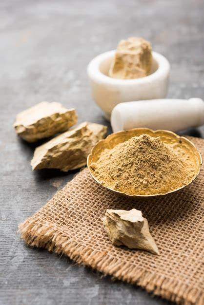
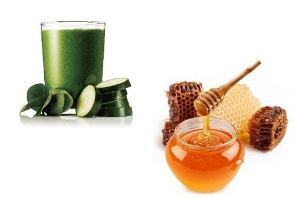
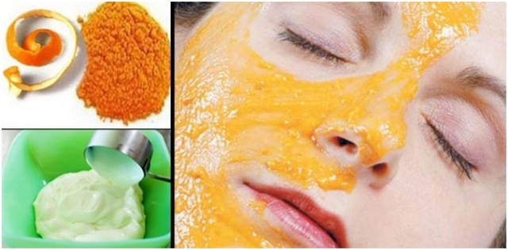

Combination Skin Type
Having combination skin means you have traits of both dry and oily skin. This skin type requires high level sun protection due to its oily nature and sensitivity to UV rays. Combination skin includes areas that are dry as well as oily with the T-zone commonly being oily, and the cheeks being either dry or normal. This skin type can vary during different seasons of the year, and due to various factors, such as stress or hormone fluctuation. Effective cleansing and hydration are key to care for skin that's oily or normal in some places and dry in others.
Identifying Combination Skin Type
- Oily T-Zone And Dry Cheeks
- Breakouts Just On Temple, Jaw And Nose
- Dry Cheeks
- Large And Open Pores
- Shiny Skin
Causes Of Combination Skin
Besides genetics your skin also changes depending on the climate. For example, the summer months might make you oily, while the winter months might make you feel dry.
Maintaining Combination Skin
- Use gentle face wash- Combination skin has larger pores in the T-zone than the rest of your face. Using harsh products may clog your pores. A gentle cleanser is recommended if you have combination skin.
- Exfoliate gently- Using an exfoliator every day isn't recommended for all skin types because it removes necessary oils from the surface. Be sure not to scrub too hard on your T-zone. You can damage your skin by exfoliating too hard.
- Apply sunscreen- Pick an oil-free sunscreen with mattifying properties.If you're still not sure about your skin type then you can head over to our blog on skin types test which has four easy tests that will help you to identify your skin type.
Home Remedies For Combination Skin
1. Multani Mitti Pack:-
Multani mitti is a fantastic ingredient for those with combination skin because of its oil-absorbing qualities. It also eliminates acne and cleans your face’s pores. It has a cooling impact on your face and increases blood circulation, which helps to enhance your skin tone.
How to make it:-To prepare a thick paste, combine two teaspoons of Multani mitti, one tablespoon of lemon juice, and one tablespoon of rose water in a bowl. Leave it on for 20 minutes after applying it all over your face, and then rinse it off. Multani mitti will harden as it dries, so it’s best not to talk while the mask is on your face.
2. Cucumber Juice And Honey
Cucumber juice mixed with honey is perfect for combination skin. Honey effectively tightens pores while also providing optimal moisture to the face. Cucumber, on the other hand, is an excellent cure for dryness or flakes on your skin due to its nourishing and anti-inflammatory characteristics.
How to make it:- With the help of a juicer, blend one cucumber finely. In a dish, strain the cucumber juice and stir in two teaspoons of honey. To make a gooey juice-like consistency, combine both ingredients in a blender. Using a cotton ball, apply the mixture to your skin. Allow it to dry completely before removing it with water.
3. Dried Orange peel powder And Curd
How to make it:-Grind the orange peel once it has been dried. To form a thick paste, add some curd. Apply and rinse with lukewarm water after 20 minutes.
4. Papaya banana mash and lemon juice
If your skin becomes excessively dry in certain areas, use a rich moisturizing ingredient like banana or papaya to restore suppleness. Lemon juice will not only brighten your tan, but it will also prevent oiliness.
How to make it:-In a bowl, mash a few slices of fruit (papaya/banana). Then crush half a lemon into it and combine the two ingredients. Apply the product to the skin and wait for it to dry. After a while, rinse it with normal water.